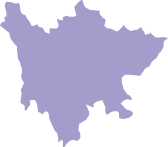

-
生态理念
一个车厢即一方生态
在小马快车的生态理念中，汽车不再是出行的工具，而是实现各项生活服务的载体，通过线上技术服务与线下硬件的结合，联合多方资源实现多元化的服务内容，从而围绕出行这一民生热点话题，建立一个强调品质生活的生态平台。
-

-


-


-

-
城市战略布局
小马快车在一、二线城市打造模范试点，并同时着手旅游市场的出行缺口，在旅游热点省市铺设生态产品线。

-
车辆战略布局
小马快车直接与汽车厂商合作，产品线覆盖众多汽车品牌，面向不同消费层级的用户可以提供多元化服务。

-
平台战略布局
小马快车充分利用线上的技术优势与线下的资源与服务优势，打造覆盖办公、旅游、娱乐，注重生活品质的一站式出行平台。

-
生态战略布局
小马快车将办公、娱乐、旅游等生活元素融入到出行服务中，形成多元化的产品线与丰富的业务内容，从而打造全新的生态体验。
北京
郑州
上海
南京
长沙
云南

海南

四川
贵州


-

-
巴士通勤
以金融街项目作为标杆，逐渐在全国推广
-

-
闭环生态
全线完善配套服务设施，通过线上大数据整合， 打造闭环生态结构
-

-
旅游出行
以高铁站和热景区为核心，辐射出行需求，并提供吃、住配套服务
-
充电站
小马快车将在每个站点城市建设10-15个充电站，供自身车队所需的同时，推进城市的能源网络建设。

-
物流仓储中心
小马快车将在一二线城市建设物流仓储中心，依托能源网络，大大减轻商业物流的人力成本与车辆成本。

-
5S中心
小马快车5S中心以车辆销售、体验、维修、改装为核心业务,联合车厂,依靠自身线下产品拓宽市场渠道。